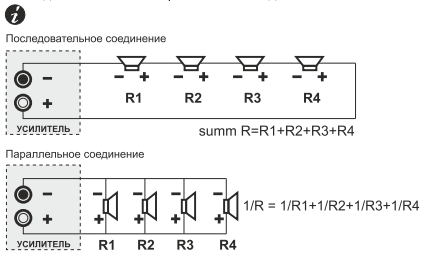
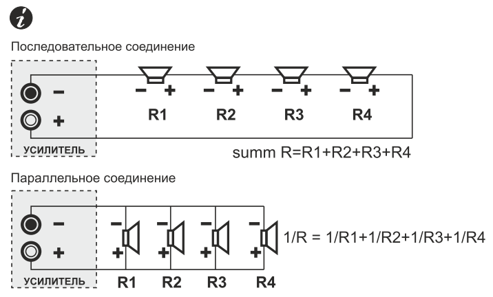
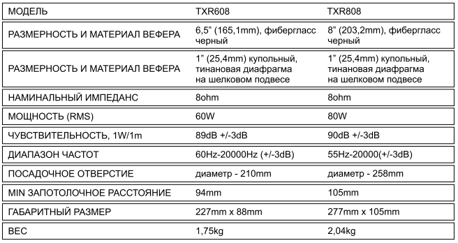

CVGaudio Manuals
| Repository | https://www.cvg.ru/ |
Downloads ↵
CVGaudio TXR608
Оглавление
Ended: Downloads
manuals ↵
Diga Series ↵
Unicore DX
Подключение и использование
Table of Contents
Example
Example2
Third Example
Fourth Example
CVGAUDIO UNICORE DX устанавливается на DIN рейку. В комплект поставки не входит блок питания. Рекомендуем использовать блок питания для установки на DIN-рейку 12V/2A. Подключение всех интерфейсных кабелей происходит через коннекторы с зажимом под винт.

CVGAUDIO UNICORE DX имеет габариты 90mm x 212mm x 58mm и предполагает монтаж на DIN рейку – корпус выполнен со всеми необходимыми защёлками. В стойке прибор займет всего 12U. CVGADUIO UNICORE DX может быть использован как самостоятельный контроллер или как расширитель интерфейсов для других контроллеров. Также можно объединять неограниченное количество UNICORE DX посредством подключения в одну локальную сеть.
Первое включение
Перед началом использования необходимо подключить UNICORE DX к Вашей локальной компьютерной сети или напрямую к управляющему компьютеру. Для подключения потребуется стандартный, одинаково обжатый с двух сторон, патч-корд 8P8C (не входит в стандартный комплект поставки). Далее необходимо организовать электропитание прибора с помощью блока питания 12В 2А (не входит в стандартный комплект поставки). Как было описано выше необходимо подключить блок питания к винтовым клеммам (7) соблюдая полярность.
При подаче питания на прибор автоматически будут отработаны сценарии прописанные на данное событие и активируется светодиодная индикация на лицевой панели устройства. Ключевой индикатор информирующий о состоянии и режиме работы UNICORE DX - это STATUS. В штатном режиме работы индикатор STATUS мигает красным примерно раз в секунду. Остальные 16 красных индикаторов на лицевой панели, как было описано выше, информируют о том активен тот или иной порт устройства и в каком состоянии находятся логические контакты.
Для доступа к веб-интерфейсу управления и программирования CVGAUDIO UNICORE DX необходимо чтобы управляющий компьютер и UNICORE DX находились в одной подсети. По умолчанию IP адрес UNICORE DX - 192.168.1.6. Таким образом компьютер с которого вы будете заходить на веб-интерфейс UNICORE DX должен иметь IP - 192.168.1.«значение отличное от «6». Чтобы проверить и при необходимости изменить IP адрес Вашего компьютера необходимо зайти в раздел Центр Управления сетями и общим доступом и далее выбрать Соединение по локальной сети. В открывшемся окне нажмите СВОЙСТВА и далее в следующем окне выберете - Протокол Интернета версии 4 (TCP/IPv4). После этого станет доступна еще одна кнопка СВОЙСТВА. После ее нажатия откроется следующее окно, в котором вы сможете установить необходимый Вам IP адреса и способ его получения. Для того чтобы вы могли изменить IP необходимо выбрать - Использовать Следующий IP адрес. Далее задайте любой свободный IP в одной подсети с CVGUDIO UNICORE DX (192.168.1.6), например, 192.168.1.2, если он не занят другими устройствами.
Адрес DNS сервера в данном случае для нас не имеет значения и можно эту настройку пропустить. Далее нажмите кнопку OK и закройте все окна настройки сетевых подключений. После этого запустите браузер, рекомендуем использовать FireFox или CHROME, они обеспечат более корректное отображение веб-интерфейса UNICORE DX. В адресной строке браузера введите IP UNICORE DX, по умолчанию 192.168.1.6. Если вы все сделали правильно, то вы увидите предупреждение о том, что интерфейс загружается.

Базовые настройки веб-интерфейса
После того, как Вам стал доступен интерфейс управления устройством в первую очередь необходимо настроить сетевое подключение. Для изменения IP адреса необходимо зайти в раздел SETTING / NETWORK SETTING. Здесь вы сможете прописать новый IP для Вашего CVGAUDIO UNICORE DX.
IP ADDRESS - адрес UNICORE DX в сети. По умолчанию, для удобства обнаружения прибора, адрес не выдается автоматически по DHCP, он должен быть прописан вручную и находится в одной подсети с компьютерами с которых будет осуществляться управление устройством. NETMASK - маска подсети, по умолчанию - 255.255.255.0 GATEWAY - адрес сетевого шлюза (маршрутизатора, роутера…) в вашей сети MAC ADDRESS - мак адрес UNICORE DX Обратите внимание, что у всех UNICORE DX по умолчанию одинаковый MAC адрес: 00-04-A3-22-86-76. В одной сети не может быть несколько устройств с одинаковым MAC адресом, поэтому если вы используете несколько UNICORE DX - необходимо прописать различные MAC адреса для всех Ваших UNICORE DX. Если вы используете другие сетевые устройства CVGAUDIO серии DIGA - также проверьте чтобы MAC адреса у всех устройств были различные.
Все остальные сетевые настройки при первом включении Вам не потребуются и к ним мы вернемся позднее. После того, как вы внесли все необходимые изменения - нажмите кнопку SAVE CHANGES в конце раздела. После этого необходимо перезапустить процессор. Для этого прокрутите интерфейс вверх и нажмите кнопку SYSTEM REBOOT. Без этого изменения не будут сохранены. Приблизительно через 10 секунд вы сможете увидеть CVGAUDIO UNICORE DX уже по новому адресу.
HI GEEKSFORGEEKS USER'S
Power Logic
Базовые настройки вэб-интерфейса
После того, как Вам стал доступен интерфейс управления устройством, в первую очередь необходимо настроить сетевое подключение. Для изменения IP-адреса необходимо зайти в раздел SETTING / NETWORK SETTING. Здесь Вы сможете прописать новый IP для Вашего CVGAUDIO POWER LOGIC.
IP ADDRESS — адрес POWER LOGIC в сети. По умолчанию для удобства обнаружения прибора адрес не выдается автоматически по DHCP, он должен быть прописан вручную и находиться в одной подсети с компьютерами, с которых будет осуществляться управление устройством.
NETMASK — маска подсети, по умолчанию — 255.255.255.0.
GATEWAY — адрес сетевого шлюза (маршрутизатора, роутера...) в Вашей сети.
MAC ADDRESS — МАС-адрес POWER LOGIC. Обратите внимание, что у всех POWER LOGIC по умолчанию одинаковый MAC-адрес — 00-04-A3-11-87-78. В одной сети не может быть нескольких устройств с одинаковым MAC-адресом, поэтому если Вы используете несколько POWER LOGIC, необходимо прописать разные MAC-адреса для всех Ваших POWER LOGIC. Если Вы используете другие сетевые устройства CVGAUDIO серии DIGA, также проверьте, чтобы MAC-адреса всех устройств были разными.
Все остальные сетевые настройки при первом включении Вам не потребуются и к ним мы вернемся позднее. После того, как Вы внесли все необходимые изменения, нажмите кнопку SAVE в конце раздела. После этого необходимо перезапустить процессор. Для этого прокрутите интерфейс вверх и нажмите кнопку ПЕРЕЗАГРУЗКА СИСТЕМЫ. Без этого изменения не будут сохранены. Приблизительно через 10 секунд Вы сможете увидеть CVGAUDIO POWER LOGIC уже по новому адресу.
Ажога
Ended: Diga Series
8 Ohm ↵
CVGaudio CX408
Оглавление
- Описание
- Установка
- Подключение
- Гарантийные обязательства
- Технические характеристики
- Габаритные размеры и чертеж
В комплект поставки акустической системы входит: - встраиваемая акустическая система CVGaudio СХ4/5/б - декоративная металлическая защитная сетка для внешней установки (безрамочный корпус) - декоративная металлическая защитная сетка для внешней установки (корпус акустической системы с видимым пластиковым кантом) - картонный шаблон для разметки отверстия под установку
Упаковка: В одной внутренней (цветной) коробке поставляется две акустических системы CVGaudio СХ4/5/6. Одна внешняя (одноцветная коробка) содержит восемь акустических систем CVGaudio СХ4/5/6.
Описание
CVGaudio СХ series - двухполосные. встраиваемые в потолок акустические системы Hi-Fi класса. Предназначены в основном для использования в бюджетных системах фонового озвучи вания и мультирум звуковых системах установленных в частных апартаментах, гостиничных номерах, коттеджах, квартирах, офисных кабинетах, небольших переговорных и так далее. Ключевой отличительной особенностью данной серии является наличие в комплекте поставки акустических систем СХ двух вариантов декоративной защитной сетки. Они отличаются тем, что при установке корпус акустики или полностью скрыт абсолютно безрамочной сеткой или при использовании второго варианта - имеет элегантный плГстиковый бортик шириной 1 Омм, В первом варианте сетка держится с помощью надежных неодимовых магнитов, во втором вставляется в специальный паз в корпусе, Благодаря такому универсальному решению акустические системы CVGaudi0 CR можно идеально вписать в лю&й интерьер, не нарушив общий стиль помещения и оставаясь фактически незаметными из-за полного отсутствия пластиковых рамок на декоративной сетке, Серия СХ состоит из трех моделей - 6“, по размеру вуфера . В моделе СХ4О8 4“ вуфер ИЗГОТОВЛен из целулозы, 3,4” твиттер из шелка. Модель СХ5О8 имеет 5“ вуфер из полипропилена и 3/4“ твиттер из шелка. Самая крупная модель данной серии имеет размер вуфера 6” (материал полипропилен) и 1 * шелковый твиттер, CVGaudio Сх4О8 и CR508 в основном рекомендуется использовать в небольших помещениях с не высоким потолком - коридоры, прихожие, санузлы, гардеробные и так далее. CVGaudio СХ608 в силу уже более большого размера вуфера и как следствие большей мощности и более низкочастотного звучания можно использовать в комнатах, гостинных. залах и так далее. Рекомендованная высота потолка - до 4-х (тах - 4,5) метра. Акустические системы серии СХ штатно изготавливаются только белого цвета, но при необходимости как сетка, так и корпус без проблем могут быть окрашены в любой необходимый цвет Импеданс всех моделей серии СХ - 80hm. Мощность (RMS) - 4“ - 20Wl 5'-30W/6“-40W. В целом акустические системы CVGaudi0 серии СХ имеют сбалансированное, комфортное звучание и отлично справятся с созданием приятного музыкального в интерьерах, где не требуется высокая громкость воспроизведения ,
Установка
Акустические системы CVGaudio серии СХ предназначены для установки в подвесной потолок или фальшь-стену толщиной от 8- ми до ЗОмм. Для монтажа необходимо наличие внутренней полости размером не менее: CVGaudio СХ4О8 - min 71 тт CVGaudio СХ5О8 - min 77 тт CVGaudio СХбО8 - 85тт Перед установкой необходимо подготовить отверстие в потолоке или стене. Размер отверстия для разных моделей серии СХ будет различным: CVGaudioCX408-141mm CVGaudio СХ508 - 16Отт CVGaudio сход -195тт К каждой акустической системе прикладывается специальный картонный шаблон для разметки отверстий. Приложите его к месту предполагаемой установки и обведите по контуру карандашом. Далее с помощью пилы необходимо вырезать размеченное отверстие . Спикерный кабель приходящий от усилителя подключается к акустической системе с помощью самозажимного кабельного терминала. Максимальное сечение кабеля которое можно зажать в данном типе терминала - 2х2,5тт. Зачистите 5mm изоляции на каждой жиле приходящего спикерного кабеля . Нажмите на терминал, подпружиненная верхняя часть опустится вниз и откроет отверстие для кабеля поместите в отверстие кабель, отпустите терминал. Подпружиненная часть разъема поднимется вверх и зафиксирует кабель в терминале. Далее проделайте туже процедуру со второй жилой приходящего кабеля. После того, как акустическая система подключена, снимите декоративную металлическую сетку с лицевой стороны корпуса, далее поместите поворотные кронштейны расположенные с задней стороны корпуса в крайнее левое положение С помощью отвертки или шуруповерта закрутите с лицевой стороны крепежные саморезы фиксирующие кронштейн до такой степени , чтобы поворотная часть свободно вращалась, но не имела большого хода по вертикальной оси. После этого поместите корпус в установочное отверстие в потолке. Придерживая одной рукой корпус акустической системы (не держите корпус за твиттер - это может нарушить его позиционирование) затяните саморезы по часовой стрелке. При вращении самореза кронштейн провернется по часовой стрелке и далее начнет опускаться вниз таким образом притягивая лицевую часть корпуса акустической системы к наружней плоскости ПОТОЛКа. Поле того, как корпус будет зафиксирован в установочном отверстии верните ан место декоративную сетку закрывающую диффузор, В комплекте поставки каждой акустической системы серии СХ имеется две декоративных сетки - безрамочная (полностью скрывающая корпус динамика) и второй вариант меньшего размера (при установке этой сетки остается видна рамка корпуса шириной приблизительно 1 Отт
Подключение
Акустические системы серии СХ имеют сопротивление 80hm и работают совместно с низкоомными усилителями. Данные усилителя в зависимости от модели работают С нагрузкой от 4-х до 160hm. Таким образом суммарное сопротивление акустических систем подключенных к каналу усилителя должно быть в пределах корректного для его работы диапазона, Данная информация всегда есть на документации к любому усилителю. Если Вам требуется подключить к каждому из каналов усилителя больше чем по одному динамику, то необходимо использовать последовательное или па аллельное соединение:

При необходимости можно использовать последовательно - параллельное соединение. При подключении акустических систем к усилителю соблюдайте полярность, Плюс на кабельном терминале имеет красную отметку.
Гарантийные обязательства
При условии соблюдения описанных выше правил установки, подключения и эксплуатации на все акустические системы призводства компании CVGaudio предоставляется гарантийный срк бесплатного сервисного обслуживания 2 года. Адрес сервисного центра Вы можете найти на web сайте компании CVGaudi0 - www.cvg.ru, или обратится к региональному дилеру у которого Вы приобрели данное оборудование. Подтверждающим документом для осуществления гарантийных обязательств является накладная на приобретение товара с печатью торговой организации, где Вы приобрели данное изделие.
Технические характеристики

Габаритные размеры и чертеж

HI GEEKSFORGEEKS USER'S
CVGaudio CL608
Оглавление
- Подключение
- Технические характеристики
- Гарантийные обязательства
- Общая информация
- Комплект поставки
- Установка
Подключение
Акустические системы CVGaudio CL608 имеют импеданс 80hm. Подавляющее большинство Iow- impedance усилителей совместно с которыми должны работать акустические системы данного типа имеют допустимый диапазон нагрузки 4-80hm. Таким образом если Вы планируете подключить к каждому каналу усилителя несколько акустических систем необходимо контролировать суммарное сопротивление подключаемой нагрузки. Допустимо использование последовательного и параллельного подключения акустических систем. При необходимости эти два типа подключения можно комбинировать. При параллельном подключении двух акустических систем сопротивление уменьшается в половину, при последовательном - сопротивление складывается.

Технические характеристики

Гарантийные обязательства
На все акустические системы производства CVGAUDIO предоставляется гарантийный срок бесплатного сервисного обслуживания - 2 года с момента приобретения изделия конечным покупателем. При возникновении проблем связанных с работой акустических систем просим Вас обратится к нашему дилеру у которого приобретался товар или в Московский офис компании CVGAUDlO. Контакты Вы сможете найти на нашем сайте www.cvg.ru. Для осуществления гарантийного ремонта необходимо предоставить любой финансовый документ подтверждающий приобретение.
Общая информация
Благодарим Вас за приобретение акустических СИСТеМ CVGaudi0 CL608, Это качественные, двухполосные, встраиваемые в потолок или стены акустические системы для систем фоновой музыки и мультирум систем в частных апартаментах, гостиничных номерах, небольших кафе и ресторанах и так далее. Ключевой особенностью данных акустических систем является то, что для их установки требуется уникально небольшое запотолочное пространство - 60мм. Это позволяет встроить акустическую систему в подвесной потолок из гипсокартона даже если он сделан без ДОПОЛНИТеЛЬНОГО отпуска, то есть несущие металлические профили нашиты непосредственно на черновой бетонный потолок. При этом CVGaudio CL608 имеют отличное качество звучания Hi-Fi класса и достаточную мощность для комфортного использования в рамках описанных выше типов объектов. Акустическая система двухполосная, вуфер 6,5” изготовлен из полипропилена, гибкий подвес на котором крепится вуфер - из резины. Купольный твиттер размером 0,75“ изготовлен из щелка. Твиттер крепится на шарнир с помощью которого можно изменять его позиционирование. Еще одной особенностью CVGaudio CL608 является лицевая металлическая защитная сетка с миниатюрной пластиковой рамкой шириной 2 мм. Благодаря этому акустическая система встроенная в потолок выглядит очень элегантно и гармонично впишется в любой интерьер. Декоративная сетка ПОлнОСтьЮ закрывает корпус установленной в потолок акустической системы. Штатно сетка имеет белый цвет, при этом ее легко можно перекрасить в любой требуемый цвет. Так как сетка полностью скрывает корпус - окрашивать нужно только ее. Для фиксации приходящего спикерного кабеля используется удобный, простой самозажимной кабельный терминал. Для подключения к нему рекомендуется использовать спикерный кабель сечением от 2х0,75тт до 2х1 ,5тт, Более толстый кабель может плохо зажиматься в разъеме и выскакивать, поэтому рекомендуем ограничиться указанными толщинами, опять же для локальной музыкальной трансляции в частных и коммерческих апартаментах (CVGaudio CL608 рекомендуются именно для такого рода помещений) применение более толстого кабеля в данном случае будет избыточным. Для подключения кабеля к динамику необходимо зачистить каждую из жил на 5-7мм, закрутить зачищенные части каждой жилы по или против часовой стрелки, чтобы кабель не пушился. Затем поочередно нажать на выступающие на спикерном терминале кнопки и поместить в открывшиеся отверстия зачищенные концы акустического кабеля, При подключении строго соблюдайте полярность. После того, как Вы поместили кабель в отверстия терминала - отпустите кнопки. Подпружиненная часть терминала надежно зафиксирует приходящий кабель.
Комплект поставки

Установка

HI GEEKSFORGEEKS USER'S
CVGaudio TXR608
Оглавление
Гарантийные обязательства
При соблюдении условий эксплуатации и правил установки на все акустические системы производства компании CVGAUDlO предоставляется гарантийное обслуживание сроком на 2 года. В случае выхода устройства из строя — просьба обратиться к региональному дилеру компании CVGAUDjO или в головной офис в Москве. Контакты офиса и сервисных центров Вы можете найти на нашем сайте www.cvg.ru в разделе КОНТАКТЫ.
Технические характеристики

Общая информация
CVGAUOlO TXR — серия высококачественных встраиваемых в потолок двухполосных акустических систем Hi-Fi класса для домашних и про4нхиональных систем комфртного фонового звука и систем домашнего кинотеатра. Акустические системы серии TXR работают только в Iow-impedance (классическом для домашнего аудио) формате и имеют номинальный импеданс 80hm„ В серию входит две модели — CVGAUDlO TXR608 и TXR808, по размеру вуфра 6.5“ и 8“ (размерность в дюймах). RMS мощность TXR608 — 60W, TXR808 — 80W. Этого С большим запасом достаточно для встраиваемых акустических систем как при домашнем использовании в частных апартаментах, квартирах, коттеджах и виллах, так и при профессиональном использования в система коммерческого аудио устанавливаемых в бутиках, кафе, ресторанах, сна, офисах и комференц-румах, При создании акустических систем (*рии TXR используются только выстокачественные компоненты. Вуфер изготавливается из очень прочной и при этом необычайно легкой карбоновой стреклоткани (практически идеального материала для акустики), крупный купольный 1' твитер сделан из титановой мембраны, установленной на шелковый подвес. Для распределения частот используется продвинутый, специально разработанный для данной серии кроссювер второго порядка с возможность управления уровнем громкости тритера относительно вуфера (-3dB 0dB +3dB). Благодаря всем перечисленным выше достоинствам обе модели акустических систем CVGAUDtO серии ТХ имею очень комфортное, звучание с яркими высокими частотами и глубоким качающим басом. Дополнительной “изюминкой" TXR является использование лицевой декоративной металлической сетки с очень тонкой пластиковой рамкой (2мм). Это придает элегантности смонтированной в потолок акустической системе и позволяет гармонично вписать ее в любой интерьер. Помимо этого, с обратной сетки вклеена специальная акустически прозрачная ткать. Благодаря этому через с»тку совершенно не заметны внутренние компоненты. Сетка со стороны слушателя имеет равномерный, без градиентов и просвечивающих частей корпуса, &лый цвет. Все это безусловно очень важно при использовании встраиваемой акустически в частных апартаментах, где пристрастное отношение к внешнему виду и дизайну имеет обостренный характер. Декоративная металлическая сетка фиксируется на очень надежных и долговечных магнитах, встроенных в корпус акустической системы. Сам корпус с очень индивидуальной, футуристической лицевой панелью изготовлен из черного ABS пластика. При фиксации лицевой декоративной сетки на установленную в потолок акустическую систему, корпус АС будет полностью скрыт.
Установка
для установки встраиваемой акустики в первую очередь необходимо подготовить отверстия в подвесном потолке. Материал потолка должен обеспечить достаточную плотность и толщину для корректной установки, Минимальная толщина подвесного потолка для надежной фиксации корпуса — 8тт, Материал — гипсокартон, фанера, листовой пластик дстаточной толщины и так далее. Допустима установка в потолок типа “Armstrong" но только в варианты достаточной толщины и из плотных материалов. В противном случае необходимо использование опциональных запотолочных укрепляющих вкладышей. Размер отверстия под установку для модели CVGAUDIO TXR608 — 210тт и для модели TXR808 — 258mm, После того, как Вы подготовили отверстия и сделали кабельную разводку (подробно подключение будет описано в следующем разделе) необходимо установить динамики. Снимите защитную сетку с лицевой стороны корпуса. Каждая акустическая система серии TXR имеет по поворотных кронштена, Кронштейны фиксируются с помощью винтов на лицевой стороне корпуса. Ослабьте винты так, чтобы кронштейны могли спокой проворачивать и установите их в крайнее положении при вращении по часовой стрелке. далее подключите приходящие акустические кабели к самозажимному кабельному терминалу на задней стороне корпуса акустической системы. Строго соблюдайте полярность при подключении. После того как Вы подключили АС к спикерной линии поместите корпус в в потолке, Затем с помощью отвертки или шуруповерта (что будет гораздо удсбнее) последовательно затените все четыре крепежных винта. В процессе закручивания каждого из винтов связанные кронштейны буду опускаться с обратной стороны потолка и в итоге прижмутся к внутренней стороне подвесного потолка благодаря чему надежно зафиксируют корпус АС в отверстии. Как отмечалось выше у каждой АС серии TXR имеется трехпозиционный селектор, который управляем громкостью твитера относительно вуфера с шагом 3dB. Перед тем как установить внешнюю декоративкую сетку — выставьте селектор в положение соответствующее наиболее комфортному звуку.
Подключение
Подключение приходящего от усилителя спикерного кабеля в акустических системах TXR реализовано с помощью специальных самозажимных кабельных терминалов. Зачистите от изоляции концы приходящего спикерного приблизительно на 8-1 Отт. Кабельные зажимы имеют красно-чёрную маркировку. Красная чёрная При подключении необходимо строго соблюдать полярность. Контакт усилителя (+) должен быть ПОДКЛЮЧЁН к контакту (+/красному) акустической системы, контакт соответственно к контакту (-/чёрному) акустической системы. Для подключения кабеля нажмите на верхнюю подвижную часть терминала, в открывшееся сбоку отверстие поместите зачищенную часть приходящего кабеля и затем отпустите кабельный зажим . Подпружиненная часть терминала поднимется вверх и надежно зафиксирует кабельную жилу, Аналогично подключите вторую жилу спикерного кабеля к терминалу соответствующей ПОЛЯРНОСТИ. В НИЗКООМНЬје (low-impedance) системах к которым принадлежит серия акустических систем TXR основным правилом которое необходимо соблюдать является при подключении - суммарный номинальный импеданс нагрузки акустических систем должен быть в корректном для усилителя Для большинства low-impedance усилителей корректный диапазон нагрузки 4-80hm, для некоторых усилителей нижний диапазон может быть 20hm, а верхний 160hm. Критичным является нижний порог — подключение меньшей нагрузки может вывести усилитель из строя. Номинальный импеданс одной акустической системы TXR - 80hm. При подключении по одной акустической системе на канал — эта нагрузка будет корректной для любого Low-impedance усилителя. Если в Вашем проекте необходимо подключить несколько акустических систем на канал усилителя, то возможныдвава иантакомм ации—лоследовательное подключение ипа аллельное подключение.

HI GEEKSFORGEEKS USER'S
Ended: 8 Ohm
Источники ↵
CVGaudio BLUEFOX
Оглавление
Общая информация
CVGAUDIO BLUEFOX - профессиональный программируемый ВЕИЕТООТН V5.1 приемник передатчик для использования в составе качественных звуковых систем конференц-залов, офисных помещений и прочих общественных и частных пространств, где требуется высококачественная передача/прием звукового сигнала, возможность глубокого программирования системы и тонкой настройки авторизации. Прибор имеет очень удобный, интуитивно понятный веб интерфейс, используемый для комплексной настройки, мониторинга работы и управления устройством, Таким образом вы можете изменить имя Bluetooth сети, изменить или убрать необходимость ввода при подключении, управлять списком сохраненных парных устройств, организовывать подключение к устройству с конкретным МАС адресом, разрешить или запретить автоматическое подключение и много многое другое. Важной особенность CVGAUDIO BLUEFOX является то, что он может быть настроен и как приемник и как передатчик. Таким образом используя два прибора — можно организовать беспроводную передачу звукового сигнала от одного BLUEFOX настроенного как - ко второму BLUEFOX настроенному как приемник. для этого в устройстве предусмотрены и INPUT для подключения сигнала от внешнего звукового источника, и таюке OUTPUT для подключения внешнего звукового усилителя. BLUEFOX поддерживает все актуальные BIuetooth профили (A2DP, AVRCP, SPP, и другие) и протоколы для высококачественной беспроводной передачи звука (aptX, aptX LowLatency, МРЗ, ААС, SBC). На корпусе CVGAUDIO BLUEFOX имеются три кнопки на которые можно прописать нужные команды управления модулем. Все это также делается через устройства. для удобства программирования имеется удобный конструктор, упрощающий создание и ввод команд. Помимо этого, наиболее используемые команды можно закрепить на шестнадцати программируемых пользовательских кнопках web- интерфейса. Bluefox может полнофункционально управляться от внешней системой управления принимая команды по ТСР/1Р. Причем можно организовать не только управление базовыми командами типа сброс соединения, перезагрузка, а также и командами для тонкой настройки переименования, редактирования PlN кода подключения, редактирования сохраненных пар и так далее. В BLUEFOX используется внешняя, устанавливаемая на корпусе антенна. Это обеспечивает уверенный прием в прямой видимости до 30 - 40 метров. Стены и прочие преграды ощутимо уменьшают это расстояние, но в любом случае расстояние уверенного приема сигнала будет несравнимо больше, чем у устройств с внутренними антеннами. Возможно подключение выносной опциональной антенны. CVGAUDlO BLUEFOX может использоваться как настольное устройство или устанавливаться в монтажную стойку. Высота корпуса соответствует 1U. В стандартный комплект поставки входит кронштейн, который можно зафиксировать на одной из боковых сторон BLUEFOX и далее фиксировать прибор на одной из стоек рекового шкафа. Блок питания 5Vj1A входит в стандартный комплект поставки CVGAUDlO ВИИЕРОХ.громкость всех используемых аудио приборов, проектором, экраном, шторами и светом.
Лицевая панель

Технические характеристики
HI GEEKSFORGEEKS USER'S
CVGaudio M-023Bl
Оглавление
Общая информация
CVGAJ010 Г•П2З - прирессиональный мультимедийный плеер для систем фонового коммерческого звука . Плеер умеет воспроизводить музыкальный контент ло следующим интер*с.ам . - всюпроизведение МРЗ с внешних подключаемых JSB флешь накопителей (FAT32) объемом до 32Gb - МРЗ файлов с внешних к соотвествующему разъему SDc:ard (FAT32) - прием и радиостанций (память нэ 50 радиостанций найденных сканированием) - ВОЗМОжнОСТЬ ГЮДКЛЮЧеКИЯ мобильных устройств по каналу 4.2, расстояние уверенного приема 6-8 метров д зоне трямой видимости - плеер имеет аналоговый пинейный вход для п,фключения аудио сигнала линейного уровня от внешних устройств имеющих аналоговый звуковой выход CVGAJOIO М02З имеет пинейный не балансный выход и должен подключаться у линейному входу усит«теля. усилитель в свою очередь гидключается к динамикам , Для управления воспроюзведенюем можно исполь.пвать кнопки на корпусе плеера или ислользовать дистанционный R пульт управления входящий стандартный в комплект поставки. Также у данной модели предусмотренно кабельное подклочение по R к системе управления CVGAUDlO UNlCORE, В UNlCORE штатно предусмотрен интерфейс управления МО23 и 3 такой комбинации Вы сможете управлять п;юигрыванием через web- интерфейс uN]CORE с компьютера или различных мобильных CVGAJDIO МО2З имеет три варианта установки: - фиксация на стену (на задней сторне корпуса отщх:тия для с помощью саморепв - фиксация в стойку (в стандартный комллект поставки вхщят крепления для уста•-тки в рековый шкаф. высота 2U) - вариант установки (для этого необходимо снять заднюю часть корпуса плеера и устанавливать в подготовленное отверстие з стене используя стандартный бокс нг де ровтки) - настольный вариант установки плеера При настенной или встроенной установке плеера ЧВх0дим0 предусматривать лодк)д от ЬП_ Обратите Внимание - в стандартный комплект ПсХ;таВКИ не входит для плеера. Параметры &10ка 12Vl1A_ Вы приобрести опциональный блок ПИТАНИЯ в кашей компании и у ее региональных представителей, или использовать любой, другой удовлетворяющий указанным дыше характеристикам. Плеера CVGAUD]O W023 выпускаются в двух цветах черњом и белом, артикулы CVGAUO]O W023W W023BL Входящие в комллехт поставки кронштейны для установки в монтажную стойку также как и плеера окрашены в белый или черный цвет Без активных подключений CVGAUOIO М-023 находится в р:име ИНЕ IN, При подключении USB флеш•накопителя плеер автоматически начинает воспроизведение. Тоже происходит при подклкнении Sdcard при наличии на ней Мр3 файлов. Для на FM TUNER или Bluetooth нестходимо последовательно нажимать кнопку МООЕ, она будет карусельно перебирать доступные —имы. Максимальный приоритет имеет USB флеш подкпочение, при подключении uSB система автомати чески переключит их:произведение на данный порт.
Установка
CVGAUDIO М-023 можно установить накладным способом, встраивать в стену, установить в монтажную стойку или использовать как настольное устройство. Во всех перечисленных вариантах необходимо обеспечить электропитание для М-023. В стандартный комплект поставки не входит блок питания. Требуемые характеристики БП - 12V/1A. При установке CVGAUDlO М-023 необходимо соблюдать следующие правила: - плеер должен быть установлен в сухом месте, строго только в помещении - при подключении блока питания строго соблюдайте полярность - плеер имеет небалансный стерео аудио выход, учитывайте это при подключении к усилителю